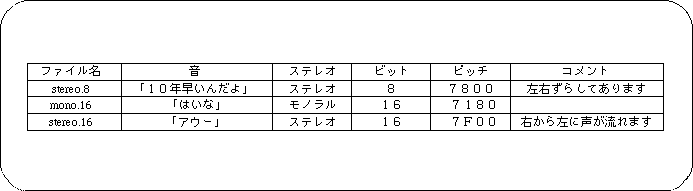

<HTML>
<HEAD>
<TITLE> PCM stream playback data </​​TITLE>
</HEAD>
<BODY>
<P> <A HREF="da2-1-1.htm"> Return to previous page </A> | <A HREF="../index.htm"> Return to menu </A> | <A HREF = "da2-2.htm"> Go to next page </A> </BR> </P> <HR>

<H3> PCM stream playback data </​​H3>

<P> PCM data for use with SGL. </P>

<B> Figure 2-11 Example PCM data file </B>
<P>


<P> Created by the sound simulator of Sega Sound Tool. </P>

<P> Sound designers should provide programmers with the following information when handing over files: </P>

<B> Table 2-1 PCM data file information to be passed to the programmer </B>
<P>


<HR>
<P> <A HREF="da2-1-1.htm"> Return to previous page </A> | <A HREF="../index.htm"> Return to menu </A> | <A HREF = "da2-2.htm"> Go to next page </A> </BR> </P> </BODY> </HTML>